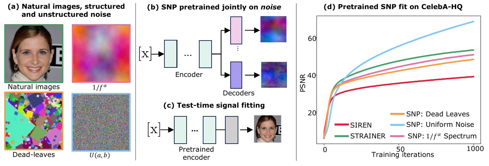
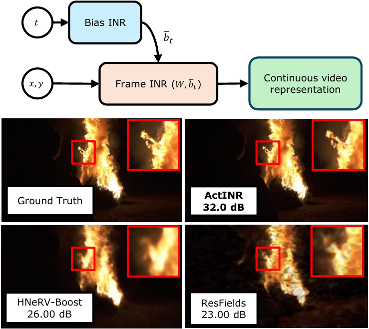

I work on deep learning under limited data and beyond the reach of RGB sensors. My research addresses inverse problems in video restoration and video depth estimation, with a focus on implicit neural representations and self-supervised learning. I am advised by Prof. Vishwanath Saragadam.
Video problems pose unique challenges compared to static images—most notably strict temporal coherence requirements and severe data scarcity driven by the curse of dimensionality. My research addresses these bottlenecks by focusing on inverse problems in video restoration and video depth estimation. I also have experience with implicit neural representations, event cameras, few-shot segmentation, and metric learning.


Analyzed how event-based deblurring improves object detection under varying illumination and non-uniform motion blur. Demonstrated 6000 RPM fan speed estimation via short-time Fourier transform on accumulated events, where RGB fails from blur.
Developed autofocus for microscopy (COVID-19 detection prototype), investigated metric learning robustness under label noise, and trained video action recognition models for driver drowsiness detection. Supervised an intern whose work won a best student paper award.
2026: Reviewer for CVPR, ECCV, BMVC
2025: Reviewer for CVPR, ICCV, IEEE Transactions on Computational Imaging, ICIP